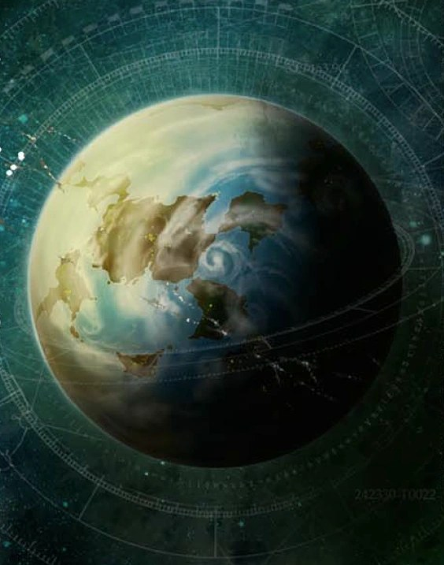

Knight world
| Knight world | |
|---|---|
| Class of Imperial world | |
 Alaric Prime, Knight world of House Terryn | |
| Administratum class | Knight world; a form of feudal world[a] |
| Typical tithe | Paid in military service by the Knight houses |
| Ruler | The High Monarch or Princeps of the ruling house |
| Population | Millions to billions of serfs, under a small noble class |
| Allegiance | Imperium of Mankind (Questor Imperialis) or Adeptus Mechanicus (Questor Mechanicus); fallen worlds to Chaos |
| Examples | Alaric Prime (Terryn), Voltoris (Griffith), Kimdaria (Raven), Hetrax (Cadmus), Chrysis (Krast), Molech (formerly) |
A Knight world is a class of planet of the Imperium of Mankind ruled by noble houses that pilot Imperial Knights, towering war machines bonded to their pilots through an ancient interface called the Throne Mechanicum. Most Knight worlds are feudal societies, in which a small aristocracy holds land and power in return for defending the serfs who work it. Their military service, not goods, is the tithe they owe the Imperium or the Adeptus Mechanicus.[1][2]
Knight worlds were founded in the Dark Age of Technology by colonists who used Knight suits to tame hostile planets. Cut off in the Age of Strife, they developed into feudal realms around their machines. They were rediscovered during the Great Crusade and bound by oath either to the Imperium or to Mars. In the Era Indomitus many Knight worlds beyond the Great Rift have been lost, and some have fallen to Chaos and become the domains of renegade houses.[2][3]
Origins
[edit]During the Dark Age of Technology, colony fleets were sent to settle distant and dangerous worlds. Each carried Standard Template Construct data for the machines it needed, among them the Knight suits, armoured walkers designed to protect settlers from native predators and to work the land. The colonists who piloted them became the leaders of their communities. When the Warp storms of the Age of Strife isolated these colonies, the pilots' families became a hereditary nobility, and the knowledge of how to maintain the suits was preserved as sacred lore.[2][4]
On each Knight world the house or houses built strongholds around their sacred machines, and the population became their vassals. The young nobles who were to pilot the Knights underwent the Ritual of Becoming, in which they were bonded to the Throne Mechanicum and to the memories of its past pilots. Imperial records describe the ritual as dangerous, and many aspirants were broken by it.[2]
Rediscovery
[edit]The Mechanicum of Mars rediscovered many Knight worlds before and during the Great Crusade (c. 798.M30–005.M31). Some were bound to Mars by ancient pacts or by the need for its tech-priests to maintain their machines. These became the Questor Mechanicus households, among them House Taranis, whose fortress stands on Mars itself, and House Raven of Kimdaria. Others swore oaths to the Emperor of Mankind and became the Questor Imperialis, among them House Terryn of Alaric Prime and House Griffith of Voltoris. Mechanicum records name this period the Great Expansion.[2][5]
Horus Heresy
[edit]The Knight worlds were divided in the Horus Heresy (005–014.M31). The Knight World of Molech was invaded by Horus in 009.M31, when its House Devine turned traitor and the other houses of Molech were destroyed in its defence. Other houses joined Horus by choice or were corrupted, and the traitor houses became the first Chaos Knights. The loyal houses fought for the Emperor and some sent Knights to the Siege of Terra.[6][7]
Society
[edit]
A Knight world is ruled by the head of its leading house, styled High King, High Monarch or Princeps. Below the ruler stand the nobles, each piloting a Knight and holding land in return. The house is bound together by codes of honour, by its heraldry and by its oaths of fealty. Lesser nobles pilot the smaller Armiger Knights in service to their lords. Nobles who break their oaths or are exiled may wander the galaxy as Freeblades.[2]
Most of the population are serfs who farm, mine or labour in the house's service, protected by its Knights in return for their loyalty. On Questor Mechanicus worlds the influence of the Cult Mechanicus is strong, and tech-priests maintain the sacred machines. On Questor Imperialis worlds the Imperial Cult dominates. Knight worlds maintain their own Sacristans to service their Knights.[2]
Military role
[edit]A Knight world pays its tithe in war. Its houses send Knights to Imperial campaigns at the call of the Imperium or of their Mechanicus patrons, either as a whole household or in smaller lances. Knights fight alongside the Astra Militarum, the Adeptus Astartes and the Titan Legions, and in battle they are among the most powerful war machines that the Imperium can deploy below the Titans themselves.[2][8]
Notable Knight worlds
[edit]| World | House | Allegiance | Notes |
|---|---|---|---|
| Alaric Prime | House Terryn | Questor Imperialis | One of the best-known houses of the Imperium |
| Voltoris | House Griffith | Questor Imperialis | Famed for its jousting traditions |
| Hetrax | House Cadmus | Questor Imperialis | Hunters of the beasts of their homeworld |
| Kimdaria | House Raven | Questor Mechanicus | Among the oldest houses; long allied to Mars |
| Mars | House Taranis | Questor Mechanicus | Fought in the Indomitus Crusade from 999.M41 |
| Chrysis | House Krast | Questor Mechanicus | Long bound to the Adeptus Mechanicus |
| Molech | House Devine and others | Traitor (House Devine) | Invaded by Horus in 009.M31 |
Fallen Knight worlds
[edit]Since 999.M41 many Knight worlds in the Imperium Nihilus have been lost to invasion or isolation, and some have been corrupted by Chaos. Their houses have become renegades, known to the Imperium as Chaos Knights, who are divided into the Iconoclast houses, ruled by tyranny and terror, and the Infernal houses, whose machines are possessed by daemons. Imperial reports describe several such fallen worlds on both sides of the Great Rift.[3][2]
Timeline
[edit]| Date | Event |
|---|---|
| c. M18–M25 | Knight worlds settled in the Dark Age of Technology[b] |
| c. 798.M30–005.M31 | Knight worlds rediscovered and sworn to Terra or Mars |
| 009.M31 | Battle of Molech; House Devine turns traitor |
| 999.M41 | Great Rift; many Knight worlds isolated or lost |
| From 999.M41 | House Taranis and others fight in the Indomitus Crusade |
See also
[edit]Notes
[edit]References
[edit]- ^ Codex Imperialis (rev. 980.M41). Adeptus Terra.
- ^ a b c d e f g h i Questor Imperialis (rev. 990.M41). Liber Nobilis: Chronicles of the Knight Houses. Alaric Prime.
- ^ a b Records of the Indomitus Crusade (ongoing). Office of the Lord Commander.
- ^ Adeptus Mechanicus (rev. 995.M41). Catechism of the Forge Worlds. Mars.
- ^ Pact of Olympus, with Martian Commentaries (c. M31). Archive of the Fabricator-General, Mars.
- ^ Chronicles of the Heresy (sealed). Logos Historica Verita, Terra.
- ^ Liber Primarchus (M32, revised M41). Administratum Archive, Terra.
- ^ Lexicanum Martialis. Officio Militaris.